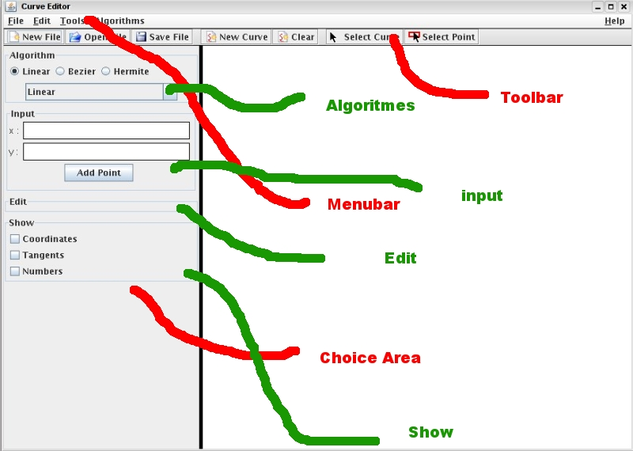
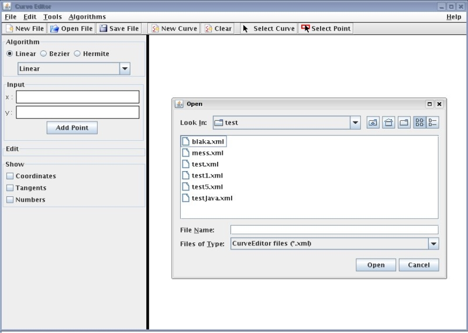
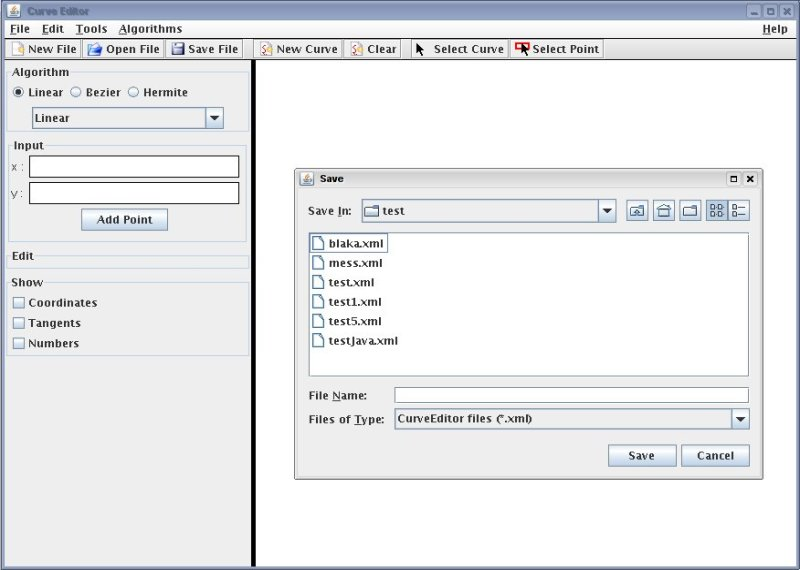
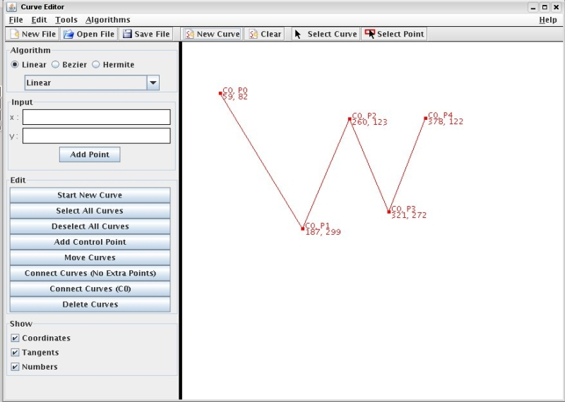
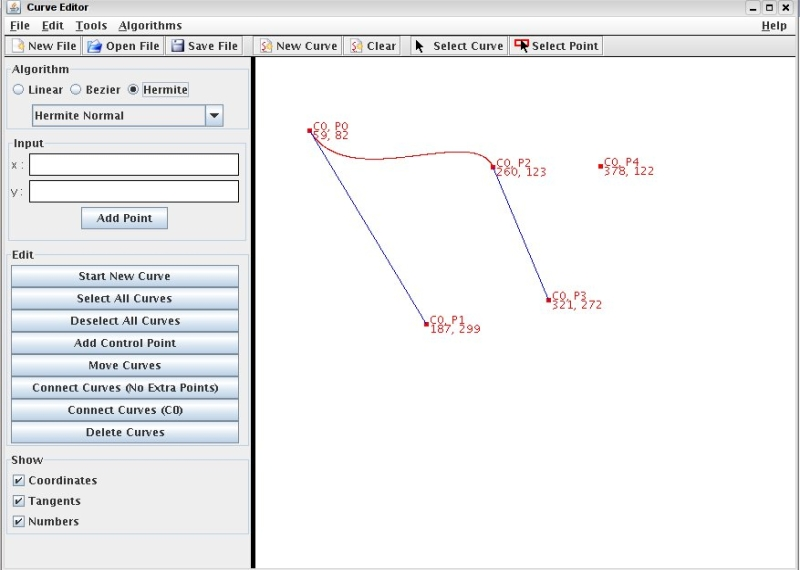

Curve Editor - Documentatie
Inhoud
- Inleiding
Bedankt om voor Curve Editor te kiezen! Deze handleiding zal u zo goed mogelijk proberen bij te staan met het oplossen van uw problemen met Curve Editor. Moest u echter op een probleem stuiten dat niet beschreven wordt in deze documentatie, dan kan u zich steeds beroepen op de hulp van onze medewerkers. Deze zijn te contacteren op:- CE Straat 123
- CE City 897
- CE Country
- #$%/#$.#$.#$
- Snelle start
-
Curve Editor starten
U heeft de volgende mogelijkheden om het programma te starten:
- Dubbelklik op het bestand CurveEditor.jar
- Of voer uit vanuit de command line: java -jar CurveEditor.jar
-
Curve Editor afsluiten
U heeft de volgende mogelijkheden om het programma te beëindigen:
- op het kruisje rechtsboven in het applicatievenster klikken
- in de menubalk: File – > Quit Program
- gebruik de toetsencombinatie Ctrl-Q
-
Curve Editor-omgeving
 Figuur 1: Curve Editor: werk-omgeving
Figuur 2: Curve Editor: Menu, File
Figuur 3: Curve Editor: Menu, Edit
Figuur 4: Curve Editor: Menu, Tools
Figuur 5: Curve Editor: Menu, Algorithms
Figuur 6: Curve Editor: Choice Area, Edit, Curves
Figuur 7: Curve Editor: Choice Area, Edit, Points
De Curve Editor bestaat uit een menubalk (zie figuur 1) waar u de mogelijkheid wordt gegeven van allerhande taken uit te voeren en instellingen te veranderen. Kort geschetst zijn volgende acties vanuit de menubalk mogelijk:- File – > (zie figuur 2)
- New File (cleart het canvas en begint met een nieuw bestand)
- Open File (laadt een bestand in, zonder het canvas te clearen)
- Save File (slaat het canvas op, in een *.xml-bestand, of in een *.png/gif-bestand)
- Save As... (slaat het canvas op in het vorig gebruikte bestand, indien dat bestaat)
- New Curve (deselecteert alle curves en begint een nieuwe curve op het canvas)
- Quit Program (sluit het programma af)
- Edit – > (zie figuur 3)
- Undo (doet de laatste verandering teniet)
- Redo (doet de laatste teniet gedane verandering opnieuw)
- Preferences (geeft de mogelijkheid van de lijndiktes e.d. in te stellen)
- Tools – > (zie figuur 4)
- None
- Path Simulation (start de wegsimulatietool)
- Point (submenu geeft de mogelijkheid bewerkingen te doen op de controlepunten ((de)selecteren, verplaatsen, deleten, ...))
- Curve (submenu geeft de mogelijkheid bewerkingen te doen op de curves ((de)selecteren, verplaatsen, deleten, verbinden, ...))
- Algorithms – > (zie figuur 5)
- Bezier (submenu laat u kiezen uit de verschillende Bezier-varianten)
- Hermite (submenu laat u kiezen uit de verschillende Hermite-varianten)
- Help – >
- Quick Howto's (laat deze sectie inladen)
- Documentation (laat dit document inladen)
- About
Voorts kunnen deze commando's ook met de volgende sneltoetscombinaties aangeroepen worden:- Ctrl-Q: de applicatie afsluiten
- Ctrl-O: een bestand openen
- Ctrl-S: naar een bestand opslaan
- Ctrl-N: een nieuw bestand beginnen
- Ctrl-C: een nieuwe curve starten
- Ctrl-U: de laatst gedane actie ongedaan maken
- Ctrl-R: de laatst ongedaan gemaakte actie terug gedaan maken
- Ctrl-P: de instellingsmogelijkheden weergeven
Verder vindt u het volgende terug in de Curve Editor-omgeving (zie figuur 1):- Toolbar:
- New File: een nieuw bestand beginnen
- Open File: een bestand openen
- Save File: naar een bestand opslaan
- New Curve: een nieuwe curve beginnen
- Clear: alle curves en punten verwijderen
- Select Curve: een curve selecteren (nadien kan men dan curves in het canvas selecteren)
- Select Point: een controlepunt selecteren (nadien kan men dan controlepunten in het canvas selecteren)
- Choice Area:
- Algorithms: na selectie van Bezier of Hermite kan men in het lijstje het gewenste algoritme kiezen. Nieuwe curves zullen dan met dit algoritme berekend worden, alsook de huidige geselecteerde curves.
- Input: dit geeft de mogelijkheid om een nieuw controlepunt toe te voegen a.h.v. exacte coördinaten. U vult de gewenste getallen in en klikt op "Add Point"; het punt zal dan aan de geselecteerde curves toegevoegd worden en weergegeven worden.
- Show: het aanvinken van een keuze zorgt ervoor dat deze in het canvas wordt weergegeven.
- Edit: dit kan twee verschillende vormen aannemen, afhangende van het feit of u curves of controlepunten geselecteerd hebt.
- Curves (zie figuur 6):
- Start New Curve: een nieuwe curve starten
- Select All Curves: alle curves selecteren
- Deselect All Curves: alle curves deselecteren
- Add Control Point: een nieuw controlepunt aan de geselecteerde curves toevoegen
- Move Curves: de geselecteerde curves verplaatsen (hierna kan men door de cursor in het canvas te draggen de curves verplaatsen)
- Connect Curves (No Extra Points): de geselecteerde curves verbinden en op hun oorspronkelijke plaats laten
- Connect Curves (C0): de geselecteerde curves verbinden en verplaatsen naar het einde van de vorige curve
- Delete Curves: alle geselecteerde curves verwijderen
- Controlepunten (zie figuur 7):
- Start New Curve: een nieuwe curve starten
- Add Control Point: een nieuw controlepunt aan de geselecteerde curves toevoegen
- Deselect All Control Points: alle controlepunten deselecteren
- Move Control Points: de geselecteerde punten verplaatsen (hierna kan men door de cursor in het canvas te draggen de punten verplaatsen)
- Move Curves: de geselecteerde curves verplaatsen (hierna kan men door de cursor in het canvas te draggen de curves verplaatsen)
- Delete Control Points: alle geselecteerde punten verwijderen
- Curves (zie figuur 6):
- File – > (zie figuur 2)
-
Canvas inladen
 Figuur 8: Curve Editor: canvas/curve inladen
Een bestand inladen gebeurt door vanuit de menubalk "Open File" te kiezen of de sneltoetsencombinatie Ctrl-O te gebruiken. Na dit gedaan te hebben, krijgt men het venster dat in figuur 8 te zien is. In dit venster navigeert men dan naar het gewenste *.xml– bestand; na selectie van dat bestand klikt men op "Open" om het bestand in te laden. Inladen van bestanden zorgt niet voor het clearen van het canvas; op deze manier is het mogelijk curves uit meerdere bestanden tegelijkertijd te gebruiken: men laadt dan gewoon de nodige bestanden in.
-
Canvas opslaan
 Figuur 9: Curve Editor: canvas/curves opslaan
Een nieuw bestand aanmaken gebeurt door vanuit de menubalk "Save As" te kiezen of de sneltoetsencombinatie Ctrl-S te gebruiken. Om het vorig weggeschreven bestand te overschrijven met de huidige inhoud van het canvas, dan kiest men vanuit de menubalk "Save File". Na een van de twee acties gedaan te hebben, krijgt men het venster dat in figuur 9 te zien is. In dit venster navigeert men dan naar het gewenste bestand dat men wilt overschrijven; na selectie van dat bestand klikt men op "Save" om het bestand weg te schrijven. Men kan i.p.v. een reeds bestaand bestand te selecteren ook zelf een bestandsnaam in het tekstveld "File Name" ingeven: dit schrijft het canvas weg naar dat bestand.
Men kan kiezen om het canvas in een *.xml-bestand op te slaan; dat geeft de mogelijkheid om het daarna terug in het programma in te laden en verder te gaan. Men kan ook kiezen om het canvas als een afbeelding in een *.png- of *.gif-bestand op te slaan. Indien een ander bestandsformaat gekozen wordt, dan zal het uiteindelijke bestand de *.xml-informatie bevatten.
-
Canvas clearen
Het canvas clearen heeft als gevolg dat alle aangemaakte curves verwijderd worden en men terug van een lege canvas vertrekt. Dit kan op de volgende manieren bekomen worden:
- Menu – > File – > New File: een nieuw bestand beginnen heeft hetzelfde effect als alle curves verwijderen
- Toolbar – > New File: een nieuw bestand beginnen heeft hetzelfde effect als alle curves verwijderen
- Toolbar – > Clear
-
Curve Editor starten
- Gebruik
- Nieuwe Curve Aanmaken
Volgende mogelijkheden zijn beschikbaar om aan een nieuwe curve te beginnen:- Gebruik de sneltoetsen Ctrl-C
- Menu – > File – > New Curve
- Toolbar – > New Curve
- Indien in Choice Area het Edit–gedeelte actief is: klik op "Start New Curve"
Nadat u één van de vorige acties gedaan hebt, kunt u in het canvas aan een nieuwe curve beginnen door een eerste nieuw controlepunt aan te klikken of in te geven.
- Curves (de)selecteren
Toolbar – > Select Curve zorgt ervoor dat men curves kan (de)selecteren, als dat al niet het geval was. Reeds geselecteerde curves blijven geselecteerd.
Om curves te selecteren kan men de muiscursor draggen: men duwt de linkermuisknop in, sleept de cursor waardoor een selectierechthoek zichtbaar wordt, en men laat de linkermuisknop terug los. Alle curves die punten bevatten in dat selectierechthoekje zijn nu geselecteerd. Een andere manier is om curves aan te klikken: dit zorgt er ook voor dat geselecteerde curves gedeselecteerd kunnen worden. Nog een andere mogelijkheid is om ALLE aangemaakte curves te selecteren door op Choice Area – > Edit – > Select All Curves te klikken. ALLE geselecteerde curves worden gedeselecteerd door op Choice Area – > Edit – > Deselect All Curves te klikken.
Geselecteerde curves worden in het rood weergegeven, niet-geselecteerde in het zwart (zie figuur 10). Curves die na het loslaten van de linkermuisknop of curves die na klikken op de huidige positie geselecteerd zullen worden, worden in magenta weergegeven (zie figuur 10).
Figuur 10: Curve Editor: curves selecteren
- Curves verplaatsen
Dit is enkel mogelijk indien men curves (of controlepunten met de daaraan verbonden curves) geselecteerd heeft.
Choice Area – > Edit – > Move Curves activeert de move-functionaliteit. Die werkt als volgt: men houdt de linkermuisknop ingeduwd op een plaats in het canvas, dit is de startpositie. Nu kan men de cursor over het canvas slepen en alle curves worden verplaatst over een afstand die gelijk is aan de afstand tussen de startpositie van de cursor en de huidige positie van de cursor. Die afstand wordt weergegeven door een grijze lijn (zie figuur 11). Laat men de linkermuisknop los, dan zijn de curves definitief verplaatst.
Figuur 11: Curve Editor: curves verplaatsen
- Curves verwijderen
Men kan uiteraard kiezen om ALLE curves te verwijderen door heel het canvas te clearen, maar men kan ook enkel de geselecteerde curves verwijderen. Dit doet men door op Choice Area – > Edit – > Delete Curves te klikken. Dit zorgt ervoor dat het canvas enkel nog maar bestaat uit de niet-geselecteerde curves.
- Curves verbinden
Indien er curves geselecteerd zijn, dan kan men ervoor kiezen om deze tot één lange curve te verbinden. Ongeacht de gekozen manier wordt de curve berekend a.h.v. het algoritme van de eerst geselecteerde curve. Vervolgens wordt elke volgende geselecteerde curve verbonden aan de lange curve om uiteindelijk tot een grote curve te komen.
Er zijn twee verbindingsmanieren:- Choice Area – > Edit – > Connect Curves (No Extra Points)
De nieuw aangemaakte curve krijgt de eigenschappen van de eerst geselecteerde curve en AL de controlepunten van de geselecteerde curves. Het eerste controlepunt van een geselecteerde curve volgt op het laatste controlepunt van de vorige geselecteerde curve. De controlepunten behouden hun oorspronkelijke posities met andere woorden. - Choice Area – > Edit – > Connect Curves (C0)
De nieuw aangemaakte curve krijgt de eigenschappen van de eerst geselecteerde curve en AL de controlepunten van de geselecteerde curves. Het eerste controlepunt van een geselecteerde curve valt samen met het laatste controlepunt van de vorige geselecteerde curve. De controlepunten van die volgende te verbinden curve worden verschoven over een afstand zodanig dat die twee punten samenvallen.
- Choice Area – > Edit – > Connect Curves (No Extra Points)
- Punten (de)selecteren
Toolbar – > Select Point zorgt ervoor dat men controlepunten kan (de)selecteren, als dat al niet het geval was. Reeds geselecteerde controlepunten blijven geselecteerd.
Om controlepunten te selecteren kan men de muiscursor draggen: men duwt de linkermuisknop in, sleept de cursor waardoor een selectierechthoek zichtbaar wordt, en men laat de linkermuisknop terug los. Alle controlepunten in dat selectierechthoekje zijn nu geselecteerd. Een andere manier is om controlepunten aan te klikken: dit zorgt er ook voor dat geselecteerde controlepunten gedeselecteerd kunnen worden. ALLE geselecteerde controlepunten worden gedeselecteerd door op Choice Area – > Edit – > Deselect All Control Points te klikken.
Geselecteerde controlepunten worden in het groen weergegeven, niet-geselecteerde in het zwart of rood, naargelang de selectiestatus van de curve waartoe zij behoren (zie figuur 12). Controlepunten die na het loslaten van de linkermuisknop of controlepunten die na klikken op de huidige positie ge(de)selecteerd zullen worden, worden in geel weergegeven (zie figuur 12). Geselecteerde of gehooverde punten zorgen er ook voor dat de curves waarvan dat punt een controlepunt is, ook geselecteerd of gehooverd zijn.
Figuur 12: Curve Editor: controlepunten selecteren
- Punten verplaatsen
Dit is enkel mogelijk indien men controlepunten geselecteerd heeft, uiteraard
Choice Area – > Edit – > Move Control Points activeert de move-functionaliteit. Die werkt als volgt: men houdt de linkermuisknop ingeduwd op een plaats in het canvas, dit is de startpositie. Nu kan men de cursor over het canvas slepen en alle geselecteerde controlepunten worden verplaatst over een afstand die gelijk is aan de afstand tussen de startpositie van de cursor en de huidige positie van de cursor. Die afstand wordt weergegeven door een grijze lijn (zie figuur 13). Laat men de linkermuisknop los, dan zijn de controlepunten definitief verplaatst.

Figuur 13: Curve Editor: punten verplaatsen
- Punten verwijderen
Dit doet men door op Choice Area – > Edit – > Delete All Control Points te klikken. Dit zorgt ervoor dat de geselecteerde controlepunten uit alle curves tot waartoe zij behoren verwijderd worden.
- Nieuw punt toevoegen
Dit is enkel mogelijk indien men curves geselecteerd heeft. Curves zijn geselecteerd als ten minste één controlepunt van de curve geselecteerd is, of wanneer de curve zelf geselecteerd is. Indien men een nieuwe curve aangemaakt heeft, is die automatisch geselecteerd. Een nieuw controlepunt wordt toegevoegd aan alle curves die op dat moment geselecteerd zijn.
Choice Area – > Input geeft de mogelijkheid om een controlepunt op een exacte positie toe te voegen. Men vult dan de coördinaten in en klikt op "Add Point". De andere manier is door de add-functionaliteit te activeren, als dat al niet geval was. Dit doet men door op Choice Area – > Edit – > Add Control Point te klikken. Nu kan men in het canvas klikken op een plaats waar men een nieuw controlepunt wilt toevoegen. Men kan punten blijven toevoegen totdat de add-functionaliteit niet meer actief is (wanneer bvb. de move- of select-functionaliteit geactiveerd is).
- Undo/Redo
Bepaalde veranderingen aan het canvas kan men ongedaan maken: punten toevoegen, curves verplaatsen, curves verwijderen, ..., kortom: acties die de inhoud van curves echt veranderd hebben. Veranderingen van interpolatiealgoritmen kunnen bvb. niet ongedaan gemaakt worden, omdat deze makkelijk terug kunnen gezet worden via de daartoe bestemde keuzemenu's. Dingen ongedaan maken kan men doen door gebruik te maken van de sneltoetscombinatie Ctrl-U of Menu – > Edit – > Undo.
Indien men een ongedane verandering terug wilt gedaan maken, dan kan men gebruik maken van de sneltoetscombinatie Ctrl-R of Menu – > Edit – > Redo.
- Path Simulation Tool
Curve Editor heeft ook een tooltje aan boord: Path Simulation Tool dat men kan activeren via Menu – > Tools – > Path Simulation.
Deze tool laat een bolletje zien dat zich over de eerst geselecteerde curve verplaatst, om zich daarna over de tweede geselecteerde curve te verplaatsen, enzovoort. Het bolletje vertrekt telkens van het begin van de curve om te eindigen in het einde, en dit voor elke geselecteerde curve. De volgorde van curves wordt bepaald door het tijdstip van hun selectie; zo zal de eerst geselecteerde curve eerst gebruikt worden.
- Curveweergave wijzigen
Men kan instellen wat wel en wat niet van de geselecteerde curves moet worden weergegeven. Zo kan men de coöordinaten laten weergeven, de raaklijnen aan de controlepunten op de curves en de gegevens van de controlepunten die duidelijk maken tot welke curve zij behoren en het hoeveelste controlepunt van die curve zij zijn. Aan- en uitzetten van die weergaven gebeurt door het aan- en uitvinken van de checkboxen in Choice Area – > Show. In figuur 14 zijn alle mogelijke extra weergaveopties te zien:- de blauwe lijnstukken stellen de raaklijnen voor, als die beschikbaar zijn en/of afgeleid kunnen worden uit de controlepunten
- naast elk controlepunt geeft de bovenste regel tekst weer het hoeveelste controlepunt zij in welke curve zijn
- de onderste regel naast elke controlepunt geeft de coöordinaten weer
Figuur 14: Curve Editor: extra weergaveopties
- Nieuwe Curve Aanmaken
- Beschikbare algoritmen
- Lineair (figuur 15)
Dit interpolatiealgoritme is de simpelste: per twee opeenvolgende controlepunten wordt het tussenliggend lijnstukje berekend en uitgetekend. Zo zal de curve bestaan uit de lijnstukjes van het eerste naar het tweede, van het tweede naar het derde,... en van het voorlaatste naar het laatste controlepunt.
- Bezier C0 (figuur 16)
Dit interpolatiealgoritme is de primitieve vorm van het Bezier-interpolatiealgoritme: per vier opeenvolgende controlepunten wordt een tussenliggende curve berekend als volgt: de curve start in het eerste punt in de richting van het tweede, om dan in het vierde punt te eindigen in de richting van het derde. Een curve a.h.v. het volgend viertal controlepunten wordt weer op dezelfde manier berekend, volledig onafhankelijk van het voorgaande viertal.
- Bezier G1 (figuur 17)
Dit interpolatiealgoritme is een uitgebreide vorm van het Bezier-interpolatiealgoritme: per vier opeenvolgende controlepunten wordt een tussenliggende curve berekend zoals bij de primitieve vorm. Maar de ligging van het tweede en het derde controlepunt wordt nu echter herberekend zodanig dat de berekende curve vloeiend aansluit op de berekende curve voor het vorige en het volgende viertal. Dit wordt bekomen als volgt:
Stel viertal v1 en viertal v2 opeenvolgende viertallen van controlepunten. Het laatste controlepunt van v1 en het eerste controlepunt van v2 zijn logischerwijs dezelfde: anders zouden we niet tot een aaneengesloten curve kunnen komen. M.b.v. het voorlaatste controlepunt van v1, het gemeenschappelijke controlepunt en het tweede controlepunt van v2 kunnen we nu een nieuw voorlaatste controlepunt voor v1 en een nieuw tweede controlepunt voor v2 berekenen (het gemeenschappelijke blijft ongewijzigd). Dit doen we door de vector tussen het voorlaatste controlepunt van v1 en het tweede controlepunt van v2 te beschouwen; die vector verschuiven we dan zodanig dat het gemeenschappelijke controlepunt op die vector komt te liggen. De twee uiteinden van deze verschoven vector zijn dan het nieuwe voorlaatste controlepunt voor v1 en het nieuwe tweede controlepunt voor v2. Indien we nu op die manier voor elk gemeenschappelijk controlepunt twee nieuwe controlepunten berekenen, dan bekomen we een mooi vloeiende curve.
- Bezier C1 (figuur 18)
Dit interpolatiealgoritme is een uitgebreide vorm van het Bezier-interpolatiealgoritme: per vier opeenvolgende controlepunten wordt een tussenliggende curve berekend zoals bij de primitieve vorm. Maar de ligging van het tweede en het derde controlepunt wordt nu echter herberekend zodanig dat de berekende curve vloeiend aansluit op de berekende curve voor het vorige en het volgende viertal, én zodanig dat de berekende curve een controlepunt even snel "binnenkomt" als "verlaat", met dezelfde versnelling als het ware. Dit wordt bekomen als volgt:
Stel viertal v1 en viertal v2 opeenvolgende viertallen van controlepunten. Het laatste controlepunt van v1 en het eerste controlepunt van v2 zijn logischerwijs dezelfde: anders zouden we niet tot een aaneengesloten curve kunnen komen. M.b.v. het voorlaatste controlepunt van v1, het gemeenschappelijke controlepunt en het tweede controlepunt van v2 kunnen we nu een nieuw voorlaatste controlepunt voor v1 en een nieuw tweede controlepunt voor v2 berekenen (het gemeenschappelijke blijft ongewijzigd). Dit doen we door de vector tussen het voorlaatste controlepunt van v1 en het tweede controlepunt van v2 te beschouwen; die vector verschuiven we dan zodanig dat het gemeenschappelijke controlepunt in het midden van die vector komt te liggen. De twee uiteinden van deze verschoven vector zijn dan het nieuwe voorlaatste controlepunt voor v1 en het nieuwe tweede controlepunt voor v2. Indien we nu op die manier voor elk gemeenschappelijk controlepunt twee nieuwe controlepunten berekenen, dan bekomen we een mooi vloeiende en een in elk controlepunt even snel ingaand als uitgaand versnellende curve.
- Hermite normaal (figuur 19)
Dit interpolatiealgoritme is de primitieve vorm van het Hermite-interpolatiealgoritme: per vier opeenvolgende controlepunten wordt een tussenliggende curve berekend als volgt: de curve start in het eerste punt in de richting van het tweede, om dan in het derde punt te eindigen in de richting van het vierde. Een curve a.h.v. het volgend viertal controlepunten wordt weer op dezelfde manier berekend, volledig onafhankelijk van het voorgaande viertal. Het eerste controlepunt van het volgende viertal valt uiteraard samen met het derde controlepunt van het huidige viertal, om alzo een aaneengesloten curve te verkrijgen.
- Hermite Cardinal (figuur 20)
- Hermite Catmull-Rom (figuur 21)
 Figuur 15: Curve Editor: Lineair

Figuur 16: Curve Editor: Bezier C0
Figuur 17: Curve Editor: Bezier G1
Figuur 18: Curve Editor: Bezier C1
 Figuur 19: Curve Editor: Hermite Normaal
Figuur 20: Curve Editor: Hermite Cardinal

Figuur 21: Curve Editor: Hermite Catmull-Rom
- Lineair (figuur 15)
- Ontwikkelaars
Sibrand Staessens: Bezier-algoritmen, C1- en G1-continuïteit, selectie-functionaliteit, canvas-weergave, documentatie Sibren Polders: Hermite-algoritmen, file I/O, menu- en toolbar, Choice Area, Path Simulation Tool